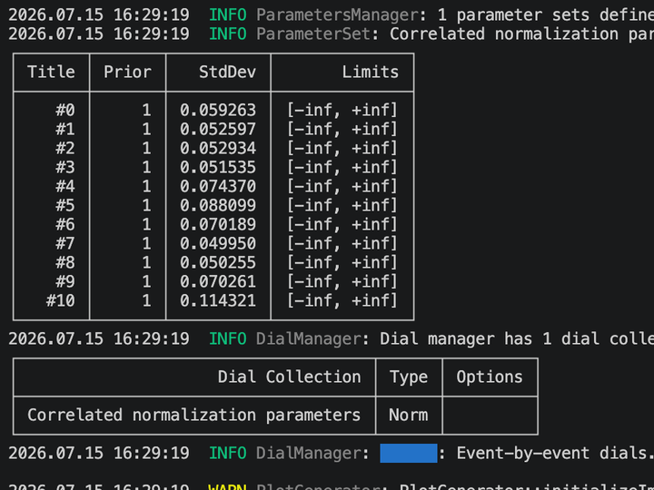
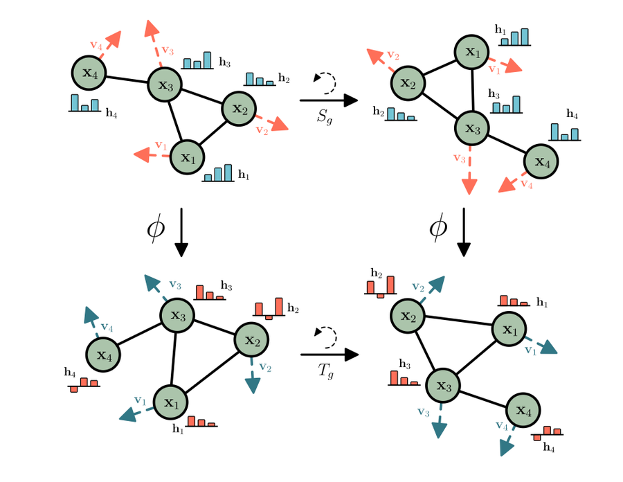
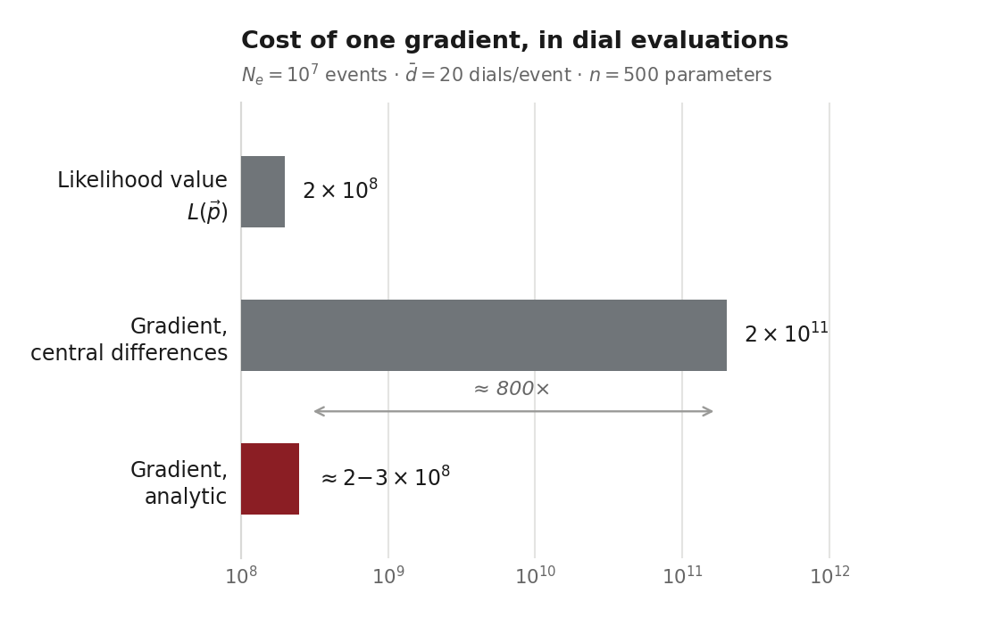
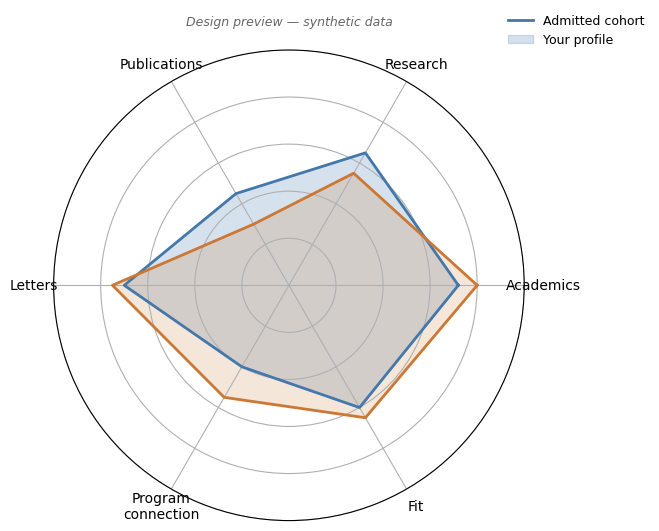
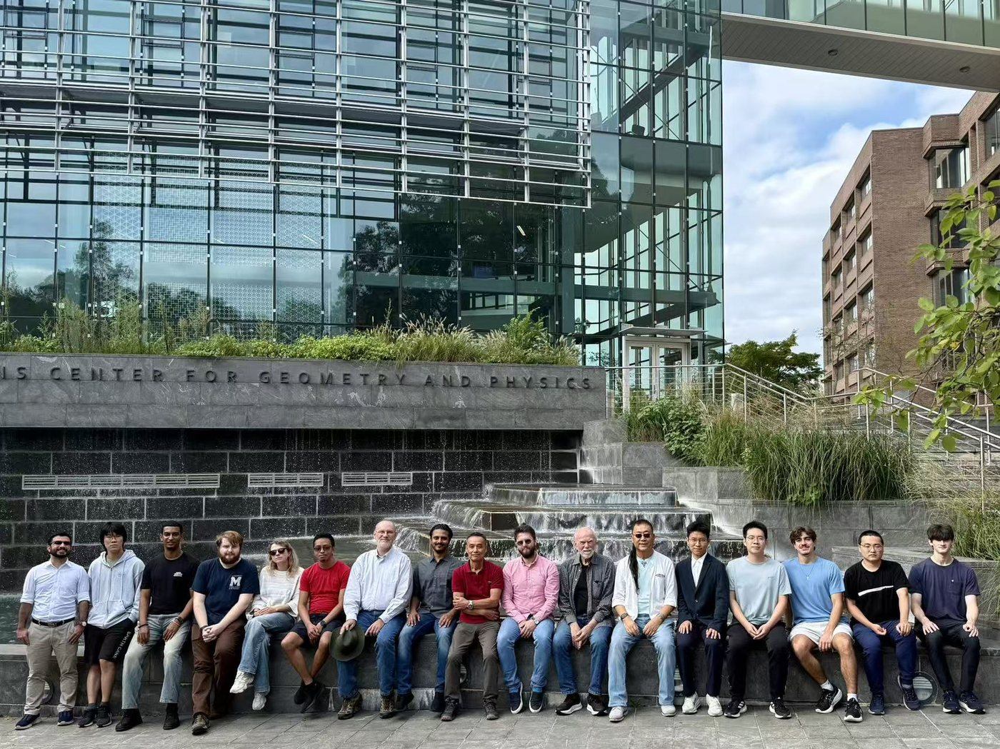
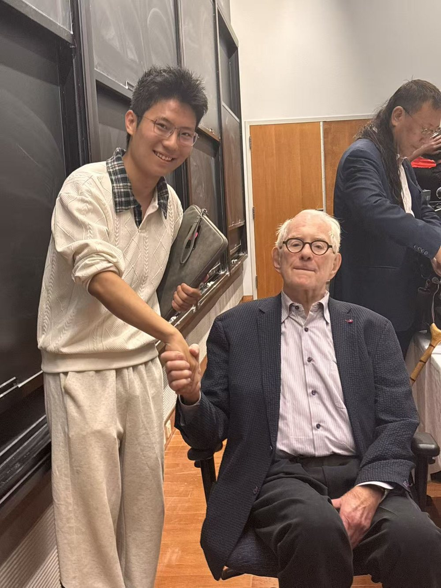
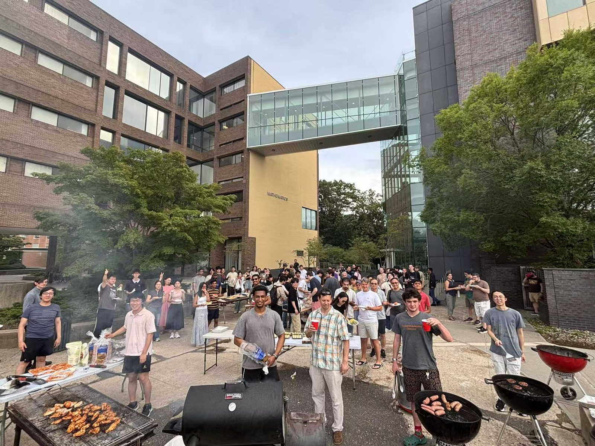

News
- 2026.09.08 Started a new direction in GUNDAM — adding analytic likelihood gradients to the fitter — with Ciro Riccio and Clark McGrew.
- 2026.08.27 The end-to-end GUNDAM input tutorial was merged into the GUNDAM organization as an official repository; developed with Ciro Riccio, reviewed with Vlada Yevarouskaya.
- 2026.07.27 Began collaborating with Bernard Tenreiro on pairwise message passing for equivariant graph networks.
- 2026.05.05 Joined the GUNDAM systematics effort, taking on the end-to-end input tutorial.
- 2026.03.12 Joined the Stony Brook Neutrino and Nucleon Decay Group, advised by Ciro Riccio.
Education
Stony Brook University, B.S. in Mathematics
Accumulated GPA: 3.99/4.0
GPA: 4.0/4.0 (Fall 2025), 4.0/4.0 (Spring 2026), 4.0/4.0 (Summer 2026)
Completed Core Coursework: Single-Variable Calculus II (MAT132), Linear Algebra (MAT211), Foundations of Computer Science (CSE113), Introduction to Artificial Intelligence (CIS102), Multivariable Calculus (MAT203), Ordinary Differential Equations (MAT303), Logic and Proof (MAT250), Probability and Statistics (AMS310), Finite Mathematical Structure and Graph Theory (AMS301), Introduction to Research (PHY287).
Current Coursework (Fall 2026): Advanced Linear Algebra (MAT310), History of Mathematics (MAT336), Applied Real Analysis and PDE (MAT341), Advanced ODE (AMS501).
Research & Projects
Research

End-to-End GUNDAM Input TutorialCompleted
Stony Brook Neutrino and Nucleon Decay Group · adopted by the GUNDAM organization
A progressive three-tier tutorial (basic → extended → advanced) for GUNDAM, the fitting framework used in modern neutrino-oscillation analyses. Includes a mock ROOT dataset generator, step-by-step fitter configurations building from a single normalization parameter to correlated parameter sets and spline responses, a fully modular large-analysis-style configuration tree, and a complete dial-type reference. It is now maintained as an official repository under the GUNDAM organization.

Pairwise Message Passing for Equivariant Graph NetworksOngoing
With Bernard Tenreiro, Prof. Yuefan Deng’s group · since July 2026
An edge-coloring decomposition of the message-passing graph that reduces the per-layer cost of equivariant graph neural networks from O(|E|) to O(|V|), evaluated on QM9 molecular property prediction. Training runs on Stony Brook’s SeaWulf A100 nodes.
Code and results are not yet public.

Analytic Likelihood Gradients for GUNDAMOngoing
With Ciro Riccio and Clark McGrew · since September 2026
GUNDAM currently exposes only the value of the likelihood. This work propagates the analytic gradient out of the reweighting engine, where the derivative information is already latent. A central-difference gradient over n parameters costs 2n full reweights; the analytic gradient costs about the same as one — changing the cost of a gradient from O(n) likelihood evaluations to O(1). This opens the fitter to quasi-Newton minimisation, Fisher-matrix preconditioning, and Hamiltonian Monte Carlo in the ~500-dimensional near-detector parameter space.
Independent Projects

SBU Physics PhD Admissions ProfileOngoing
Independent, student-run data project
A survey-based, ethics-first profile of the admitted PhD cohort in Stony Brook Physics & Astronomy: anonymized data collection from current students, cohort statistics with PCA/UMAP projections, and a planned interactive comparison tool (radar charts and AI-assisted narrative feedback). Deliberately not an admission-probability predictor — with a small sample and no rejected-applicant control group, such a claim would be statistically indefensible. Survey instrument and consent design complete; data collection underway.
Chalkside
AI-assisted guided learning for high-school and undergraduate study · joined September 2026
Joined the Chalkside team in September 2026. More to come.
Paper Reading Notes
Game Theory with Simulation of Other Players
V. Kovařík, C. Oesterheld, V. Conitzer — IJCAI 2023
Reading note written after Prof. Conitzer’s talk at the 37th Stony Brook Game Theory Conference (July 2026). Covers the simulation-game model, the value-of-information indifference condition, the piecewise-constant behavior of the simulator’s equilibrium strategy, the trust-game calculation worked in full, and the welfare cases where simulation helps or hurts. Ends with open questions and a proposed experiment comparing LLM-agent behavior in the trust game against the equilibrium predictions.
The ND280 Semi-Frequentist Fitting Strategy
Working note — near-detector fits in T2K-style oscillation analyses
A short note on the near-detector likelihood: the binned Poisson Δχ², Gaussian penalty terms for flux, detector, and cross-section systematics, and the Barlow–Beeston treatment of Monte-Carlo statistical uncertainty.
Reading Notes on the Development of Large Language Models
Transformer · BERT · GPT-3 · InstructGPT · Chain-of-Thought
Notes on five foundational papers, tracing the path from architecture (attention replacing recurrence) to scale (in-context learning) to alignment (RLHF) and prompting (chain of thought), with reflections on what each stage does and does not establish.
Teaching
I am a Teaching Assistant and grader for AMS 310: Survey of Probability and Statistics in Fall 2026, under Prof. Fred Rispoli. I hold office hours on Thursdays, 6–8 PM, working through problems and answering questions on the course material, and I grade roughly 50 submissions per assignment — across probability distributions, expectation and variance, sampling distributions, confidence intervals, hypothesis testing, and two-sample inference.
- AMS 310: Probability and Statistics — course materials, practice problems, and selected solutions
Community & Activities
Curriculum Feedback: MAT 203 Sequencing Memo
Memo to the Department of Mathematics, June 2026
A student memo on the pacing of multivariable calculus: the overlap with MAT 211, the compressed vector-calculus material at the end of the semester, and concrete suggestions — a diagnostic vector review module, an explicit “derivative as a linear map” bridge to the Jacobian, and a conceptual overview connecting Green’s, Stokes’, and the divergence theorems. The department chair responded that these observations would be brought to a faculty teaching discussion at the start of the semester, where several instructors had raised similar points.



Contact
Email: yiding.sun@stonybrook.edu
GitHub: github.com/YidingSun0824
LinkedIn: View Profile
Office Location: Physics Building D-124